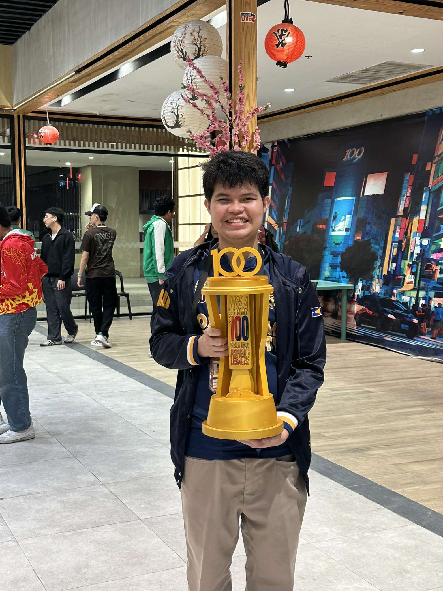

About Me
Andrew San Antonio
Bachelor of Science in Information Technology
Jose Rizal University (JRU)
Background
I am a dedicated student currently enrolled in Computer Programming 2 at Jose Rizal University. My journey in technology began with a curiosity about how software shapes our daily lives, and has grown into a passion for creating meaningful digital solutions. Through my coursework, I've been developing a strong foundation in programming fundamentals, problem-solving, and computational thinking.
Interests & Goals
I am particularly interested in SpringBoot Java Development, Ethical Hacking, Chess, Mobile games, and the intersection of technology and education. My goal is to become a Fullstack Java Developer who can build applications that make a positive impact on people's lives. I'm excited to continue learning, growing my technical skills, and contributing to innovative projects that solve real-world problems.
Academics & Relevant Works
A comprehensive showcase of my academic outputs, professional experiences, and achievements
Academic Artifacts
Work Experience
Seminars & Trainings Attended
Awards & Recognitions
Organization & Community Involvement
JRU Professional Experience
Throughout my time at Jose Rizal University, I have actively engaged in various professional development opportunities. From participating in coding competitions to collaborating on group projects, each experience has contributed to my growth as a future IT professional. I continue to seek opportunities to apply my skills in real-world contexts and contribute to the JRU community.
Term Reflections
My learning journey through Computer Programming 2, reflecting on topics, experiences, and growth each term